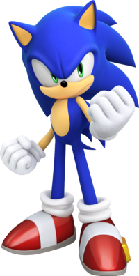
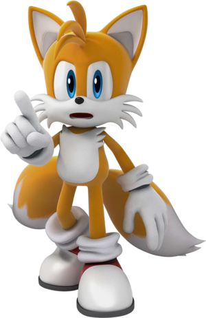
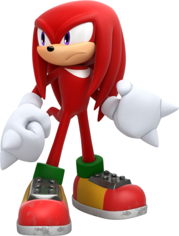
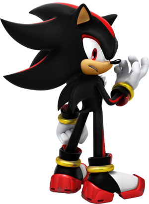
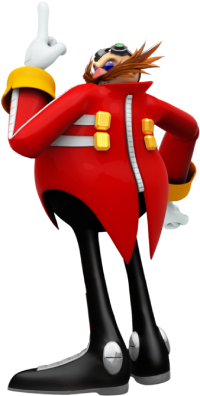

BLUE BLUER
PERSONAJES Y SUS HISTORIAS
Sonic the Hedgehog
Sonic, el Erizo (nacido el 23 de junio del 3220), también conocido como Sonic the Hedgehog en inglés, es el protagonista principal titular de la serie Sonic, el Erizo y la mascota de Sega. Él es un erizo mobiano nacido con la habilidad de correr mas rápido que el sonido, de ahí su nombre, también posee reflejos muy rápidos. Conocido por su legendaria actitud arrogante, tranquila y un temperamento algo corto, pero con un fuerte sentido de la justicia, la compasión y el amor por la libertad y la aventura, Sonic utiliza sus habilidades para proteger a los inocentes de su mundo y del más allá de las fuerzas del mal, especialmente de su archienemigo, el Dr. Eggman.
Mails "Tails" Prower
Miles Prower , mejor conocido por su apodo "Tails" es un personaje de la franquicia Sonic the Hedgehog, creado por SEGA. Es un pequeño zorro antropomórfico de dos colas, gracias a las cuales, tiene la capacidad de volar (debido al giro rápido de éstas), y de nadar. Gracias a su habilidad de volar y su considerable velocidad, se convirtió en el compañero de aventuras de Sonic the Hedgehog, quien es su mejor amigo. Acompañado de su gran inteligencia y excelentes habilidades de mecánica, Tails funciona como un gran compañero durante las aventuras, siempre ayudando a los demás con una actitud humilde. Su primera aparición fue en Sonic the Hedgehog 2 (8-bit)
Knuckles the Echidna
Knuckles the Echidna (Knuckles El Equidna en Español) es un personaje de la saga de videojuegos Sonic the Hedgehog. Es un equidna rojo antropomórfico de 16 años de edad, que es a la vez poderoso físicamente y muy resistente. También es el guardián de la Master Emerald, una poderosa joya antigua que solemnemente deber proteger de cualquiera que busque abusar de su poder. También es el único descendiente superviviente de la raza equidna del Clan Knuckles.Sus rasgos dominantes son su súper fuerza y los dos nudillos en forma de púas en cada uno de sus guantes, de donde se deriva su nombre, los cuales puede usar para cavar y escalar paredes.
Amy Rose

Amy Rose, conocida anteriormente como Rosy the Rascal, es un personaje ficticio de la saga Sonic the Hedgehog. Es una erizo antropomórfica de doce años que está perdidamente enamorada de Sonic the Hedgehog. Desde que él la salvó en Little Planet de las garras de Metal Sonic, Amy ha hecho todo lo posible para ganar su corazón, ella suele perseguirlo y autoproclamarse su novia. Amy posee un poderoso martillo llamado Piko Piko Hammer, el cual suele llevar a todas partes.
Shadow the Hedgehog
Shadow the Hedgehog es un personaje de la saga Sonic the Hedgehog; un ser hibrido creado con base de un erizo/Black Arms macho antropomórfico negro. Shadow se asemeja en muchas formas a Sonic, incluso en velocidad gracias a sus patines propulsores, llegando a velocidades iguales a las de Sonic. Él es el archirival de Sonic y su misma antítesis en todos los aspectos de su vida.
Ivo Robotnick "Eggman"
El doctor Ivo Robotnik , más conocido como el doctor Eggman ,es el antagonista principal de la serie Sonic the Hedgehog. Es un científico obeso, con un coeficiente intelectual de 300 y su sueño es dominar el mundo en toda su historia. Constantes veces, Eggman intenta crear su imperio pero todos sus planes sobre eso siempre son infinitamente frustrados por Sonic the Hedgehog, su archienemigo y sus amigos.